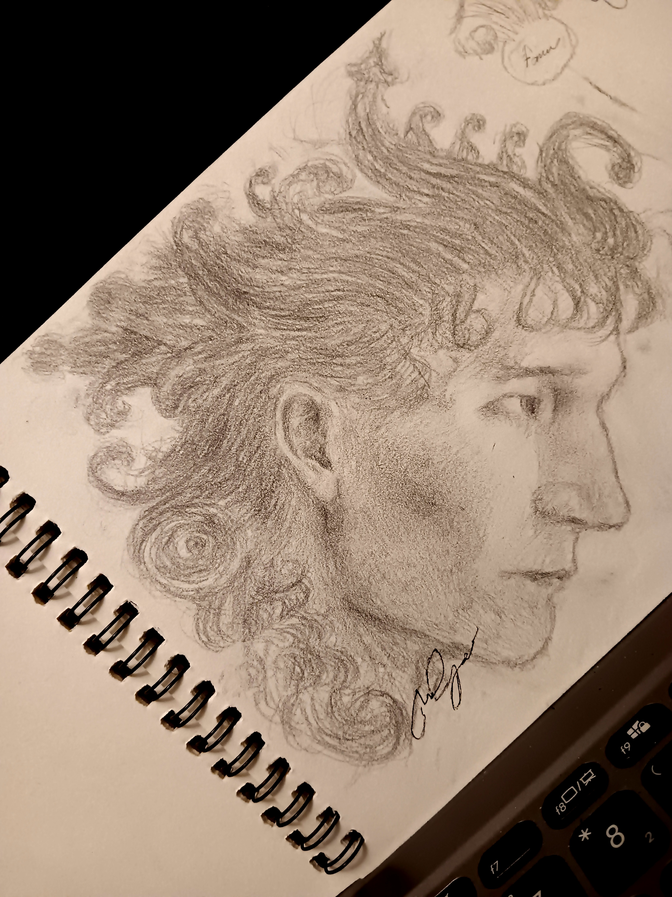

Art folder
by Sean Opao
as for my credentials, i'm barely self-disciplined. i only draw when i'm inspired, but not
inspired most of the time so
there has only been one of my works you'll see here that're
completed. i'm primarily a graphite artist mostly used
pens, but i've been motivated to use traditional colors which the period of renaissance/baroque masters had access
to and wanna do more detailed paintings; the face in general is pretty smooth so the shadows and light will
"evaporate like vapor" - one of the reasons why Leonardo is famous.
facebook, instagram - seanknowshow
twitter, youtube, discord - 1968mazdacosmo
Menu
influences.html
"Ornamented Hairdo"

"Waves Study"
 "Bucking Horse"
"Bucking Horse"


"Reflection"